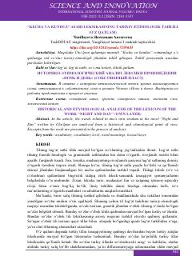

KVCho'lponning "Kecha va kunduz" romanidagi turkiy so'zlarning tarixiy-etimologik tahlili.
Ushbu ilmiy maqolada Cho'lponning mashhur "Kecha va kunduz" romanidagi o'zbek tilining o'z qatlamiga oid so'zlari tarixiy-etimologik jihatdan tahlil qilingan. Asardagi turkiy tub va yasama so'zlarning qo'llanish xususiyatlari hamda ularning lingvistik tabiati ochib berilgan. Tadqiqot o'zbek tili leksikasining shakllanishi va rivojlanish qonuniyatlarini o'rganishda muhim ahamiyat kasb etadi.